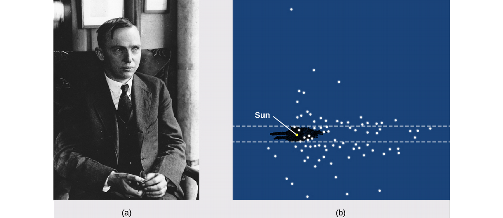
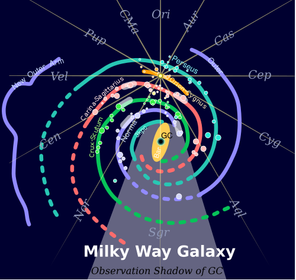
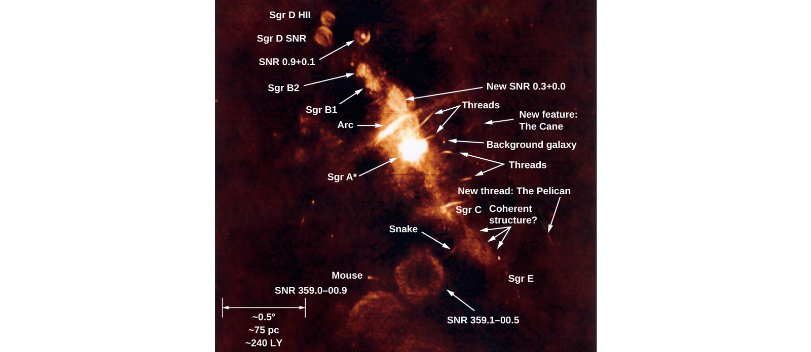
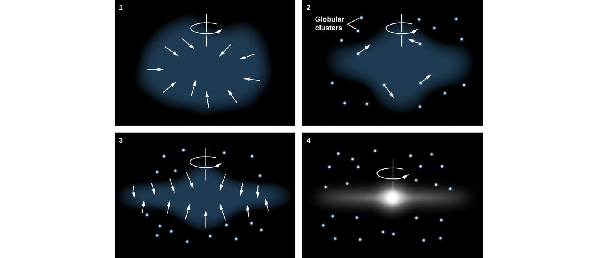
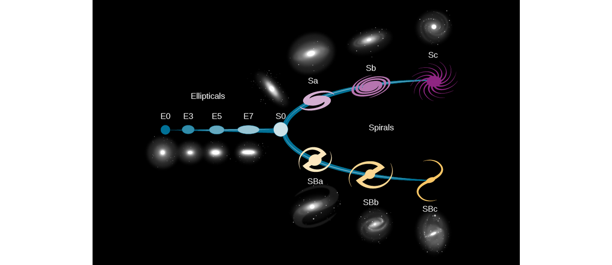
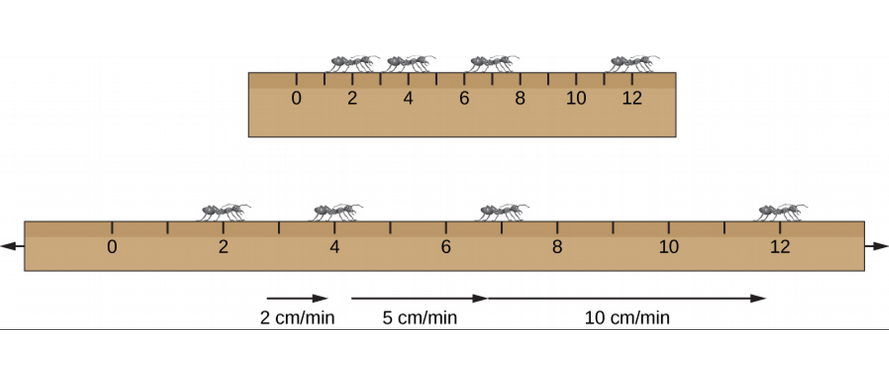

ASTR101 Ch 25-26
Ch 25 - The Milky Way Galaxy
The Architecture of the Galaxy
Herschel Measures the Galaxy
- In 1785, William Herschel noticed that most of the stars he observed lay along a plane.
- He hypothesized that the Sun was near the middle of a disk-shaped system of stars.
- The shape was correct, but he thought we were at the center because of interstellar dust.

- Harlow Shapley used RR Lyrae stars (using the period-luminosity relations) to map star clusters.
- He found them distributed in a spherical volume with its center far from the Sun in the direction of Sagittarius.
- This Thus the Sun is not the center of our Galaxy.

Disks and Haloes
- The main issue with mapping out our Galaxy is the interstellar dust which blocks out stars.
- Astronomers use radio and IR frequency ranges, which penetrate interstellar dust better.

- Brightest part is 100,000 Ly in diameter, only 2000 Ly thick.
- Youngest stars and their dust within 100 Ly of the Galaxy.
- In the disk, stars are concentrated in a central bar composed of mostly old yellow-red stars.
- The Milky Way Galaxy and other spiral galaxies with bars are termed barred spirals.
- The sun is halfway between the galactic center and its edge, 70 Ly from the galactic plane.
- The two main arms, Scutum-Centaurus and Perseus, emerge from the bar.

Figure 4: Unbarred (M74) and strongly barred spiral galaxies (NGC1365).
- Near the center is of the Galaxy is the central bulge (or nuclear bulge).
- It's difficult to observe due to interstellar dust, so the first image was taken in infrared.
- The bulge is twice as long as it is wide, shaped like a peanut.
- At its center is a tremendous concentration of matter.

- The Galaxy consists of a thin disk, a thick disk, the nuclear bulge, and a spherical halo of very old, faint stars extending at least 150,000 from the galactic center, containing most globular clusters.

- The mass extends even farther out with dark matter, an invisible source of mass with unknown composition.
Spiral Structure
The Arms of the Milky Way


- Most stars are in the two main arms, Scutum-Centaurus and Perseus.
- The Sun is along a short arm, the Orion Spur, which is 10,000 Ly long.

Figure 9: Features near Orion Spur
Formation of Spiral Structure
- Galaxies don't rotate all together, as expected from Kepler's law, P2∝a3.
- Instead, they have differential galactic rotation, where closer objects rotate with a higher period.
- Differential rotation turns features into spirals, which explains the spiral arms of the Galaxy.

- Turns out that this differential rotation over the 13-billion-year age of the Galaxy would result in it spiralling so much, it loses its features.
- Hubble observations show galaxies of like age begin with bring, clumpy star-forming regions.
- Those that would become spiral galaxies then decreased in turbulence until rotation was the dominating motion.
- Only at 3.6 billion years old would well-defined spiral arms begin to form, and only well-defined arms would form.
- Finally, at around 8 billion years old, the galaxies could have multi-armed structures.
- Supercomputer simulations replicate spiral arms and demonstrate the importance of the gravitational influence of giant molecular clouds on the formation of spiral arms.
The Mass of the Galaxy
Kepler Helps Weigh the Galaxy
- The Sun, like the rest of the stars in the Galaxy, orbits the Galactic center.
- The speed of this orbit is 200 kps (!), so that it takes us 225 million years to circle the galactic center. This is called a galactic year, of which 20 have passed in Earth's entire lifetime.
- We can use this orbital period and Kepler's law to find the mass of the galaxy.
- We obtain the result that the mass inside the Sun's orbit (a radius of 30,000 Ly) is about a billion Solar masses.
- Astronomers supposed this is a good approximation for the mass of the Galaxy, since luminous matter and bright stars drop off dramatically beyond 30,000 Ly from the galactic center.
- This seems like a reasonable conclusion, right?
A Galaxy of Mostly Invisible Matter
- Nope.
- A violation of Kepler's law consists of globular clusters and satellite galaxies outside of the luminous boundary of the Milky Way which don't rotate more slowly than the Sun.
- There are some globular clusters and RR Lyrae 30-150 kLy with orbital velocities greater than the Sun!
- Turns out most objects outside the Galaxy are moving faster than the Sun!

Figure 11: Orbital velocities CO/H gas as function of distance from Galactic Center (red), compared to orbital velocities if the matter were mostly contained within 50,000 Ly (blue).
- By comparing the period of the Sun to that of the matter outside of the Galaxy, we can find how much matter is between the Sun's orbital radius and the edge of the Galaxy.
- Remember, we can use Kepler's Law here because the orbits are stable; neither falling into the galactic center, nor flying out away from it.
- Astronomers calculate the total mass of the Galaxy to be at least 2×1012 MSun!
- This is 20 times greater than the amount of luminous matter.
- The dark matter halo which composes most of this matter extends to 200,000 Ly and is not quite spherical.
- What is dark matter (DM)?
- Can't be stars, since it's invisible.
- Can't be a gas, or we would have detected its emission and/or absorption spectra.
- Can't be interstellar dust, which would obscure galaxies noticeably.
- Can't be black holes or neutron stars, which would produce more X-rays than are observed, and would have resulted in a lot more heavy elements in younger stars than we observe today.
- Can't be brown-dwarfs or Jupiter-like planets; gravitational lensing experiments of the dark matter conclude that they can't be made up of lots of small objects one millionth to one tenth the mass of the Sun.
- Perhaps DM is made of a subatomic particle we haven't detected yet on Earth!
- DM is an active area of research.
The Center of the Galaxy
- At the center of the galaxy is a black hole with the mass equivalent of 4.6 million Suns concentrated in a sphere of diameter smaller than Mercury's orbit.
- This is an example of a supermassive black hole, Sagittarius A*, a black hole much too large to have been created by the death of a single star.
A Journey toward the Center

Figure 12: Radio image of the galactic center region by the VLA in NM.

Figure 13: Sagittarius A and some hot ionized gas, taken by VLA radio telescopes.
Finding the Heart of the Galaxy
- How can we tell that it's a black hole and not a dense cluster of stars at the center of the Galaxy?
- The event horizon of a galactic black hole of mass 4×106 MSun is only 17 times the size of the Sun (the size of a single red giant).
- We can observe the orbits around Sagittarius A* to find its mass by Kepler's law and get an upper limit of 17 Lh on its diameter.
- This upper limit is tightened through radio astronomy, in which the Very Long Baseline Array found the diameter to be no larger than .3 AU (the size of Mercury's orbit).

- If the central mass were made up of something other than a supermassive black hole, the objects are calculated to collapse and form a black hole within 100,000 years, which is very small compared to the Galaxy's 13 billion year lifespan.
Finding the Source
- Sagittarius A* may have formed from a large cloud of gas, then grown as it absorbed other objects, or it could have formed indirectly through the death of a star before growing.
- Sagittarius A* is not finished eating, and clouds are disappearing into it at a rate of 1 MSun/thousand years.
- Every 10,000 years (on average), it swallows a star that passes nearby for dessert, letting off a flare of radiation that briefly outshines all the stars in the Milky Way.
- In 2013, when the Chandra X-ray satellite detected a flare 400 times brighter than usual, but this is smaller than expected for a full star (probably a heating asteroid).
Stellar Populations in the Galaxy

Figure 15: Table 25.1
Two Kinds of Stars
- During WWII, Walter Baade of Germany discovered two types of stars using the Mt Wilson telescopes of Southern California.
- Examining Andromeda, he noticed that the reddish stars in its nuclear bulge resemble those in our globular clusters and halo, and distinguished these from the bluer stars near the spiral arms.
- He called the bright blue stars population I and the stars of the halo/globular cluster population II.
- We now know these have different chemical compositions, age, and orbital motions around the galactic center.
- Population I stars are found only in the disk and with eccentricities near zero, such as supergiants. Interstellar matter and molecular clouds are found where Population I stars are found.
- Population II stars don't care about spiral arms, but occur throughout the galaxy, with eccentric elliptical orbits that can take them through the galactic disk. These include RR Lyrae. Stars in globular clusters are also classified as Population II.
- Population I has stars as old as 10 billion years and as new as today, while Population II consist of ancient stars 11-13 billion years old.

Figure 16: Halo stars go through the galactic plane.
The Formation of the Galaxy
The Protogalactic Cloud and the Monolithic Collapse Model
- We can use stellar surveys to analyze the formation of the Galaxy.
- For example, since the oldest stars in the halo and globular clusters are spherically distributed, the protogalactic cloud that birthed the Galaxy was probably roughly spherical.
- The oldest stars are 12-13 billion years old, so our Galaxy probably shares about that age.
- Just as with star formation, the protogalactic cloud collapsed to form a thin rotating disk.
- Stars born before the collapse didn't participate in it!

Figure 17: Monolithic collapse model of Galaxy formation.
Collision Victims and the Multiple Merger Model
- 70 kLy from Earth and 50 kLy from the Galactic center is the closest known galaxy, the Sagittarius dwarf galaxy.
- It's on the other side of the galactic center, and its elongated shape indicates it's being torn by our galaxy's tides.

Figure 18: Sagittarius dwarf galaxy,
- There's evidence for more close encounters between our Galaxy and others.
- Such interactions with smaller galaxies result in the Milky Way stealing some of their stars due to its greater pull, which then orbit our Galaxy in eccentric halo orbits.
- Astronomers have identified streams originating from 12 small galaxies that came close to our galaxy, with six more streams associated with globular clusters.
- Globular cluster M54 is thought to be the nucleus of the Sagittarius dwarf which is currently merging with the Milky Way.
- There are more galactic collisions in store. Long tidal tails have been stripped from the Canis Major dwarf galaxy and wrapped themselves around the Milky Way thrice; they are expected to merge in the next billion years.
- In 3 billion years, the Milky Way itself is expected to be swallowed by the Andromeda galaxy.
Ch 26 - Galaxies
The Discovery of Galaxies
Other Galaxies
- The birth of extragalactic astronomy is cited as January 1, 1925, when Edwin Hubble read his paper on distances to nebulae.
- Prior, only closer nebulae could be properly classified.
- Farther nebulae might be clouds of gas or groups of stars within our galaxy if they were close, or stars systems of billions of stars if they were really far away.
- Better telescopes were needed at the time, like the 2.5-m (100-inch) telescope in Southern California which Hubble used to analyze nebulae.
- In some, he found cepheids, allowing him to find accurate distances to the nebulae; for example locating the farthest distance measured until that point, the 900 kLy to the Andromeda galaxy.
Types of Galaxies
Spiral Galaxies

- Identified by their spiral arms, they are also composed of a central bulge, halo, and disk, like the Milky Way. All spiral galaxies rotate.
- About 2/3 of spiral galaxies have boxy/peanut-shaped bars in their centers, termed barred spirals, and it may be that most galaxies form a bar during some point of evolution.
- Differences in sizes of arms, bulge, how defined the arms are, and how prevalent the bar is, Hubble has classified galaxies.

Elliptical Galaxies
- These sphere- or ellipsoid-shaped galaxies consist almost entirely of old stars.
- Typically have no trace of spiral arms.
- Reddish in color (due to population II stars).
- Not very dusty.
- Can get larger than spiral galaxies.

Figure 21: Elliptical Galaxies
- While spherical in nature, they can exhibit various degrees of flatness.
- Galaxies are also categorized by size into giants and dwarfs.

Figure 22: M32, a dwarf elliptical galaxy.
Irregular Galaxies
- Galaxies not matching a category are termed irregular galaxies.
- They typically have lower mass and luminosity than spiral galaxies.
- Contain both population I and population II stars.
- Some of our nearest neighbors are irregular galaxies, including the Large Magellanic Cloud and Small Magellanic Cloud.
Galaxy Evolution
- It's not the case that galaxies evolve from one type to another like stars did on the H-R diagram.
- Collisions and mergers can change spiral galaxies into elliptical.
- Even isolated spirals can change over time, losing definition in their arms as their gas is consumed by star formation.
- For stunning pictures of galaxies: http://hubblesite.org/categories/images.
Properties of Galaxies
Masses of Galaxies
- For spiral galaxies, we can observe the rate of rotation of a galaxy through its redshift.
- This rate can then deduce the galaxy's mass through Kepler's Law.
- We then add the dark matter beyond the galaxy's visible edge by analyzing its satellites, such as stars, star clusters and satellite galaxies.
- This method is not effective with elliptical galaxies, in which stars don't rotate together like in the spiral galaxies.
- Instead, we have to measure the various speeds of these stars and use the fact that the galaxy isn't breaking apart.
- We do this by measuring the Doppler broadening caused by some stars moving towards us and some stars moving away, which simultaneously redshift and blueshift our measurements.
Mass-to-Light Ratio
- Galaxies can be characterized by the ratio of their mass (in units of MSun) to their light output (in units of LSun).
- This mass-to-light ratio reveals what kinds of stars make up most of the galaxy and whether it contains a lot of dark matter.
- For example, a high mass-to-light ratio of 10-20 implies older stars which have completed their evolution and ceased to shine, while galaxies still undergoing star formation range a ratio of 1-10.
- Galaxies containing dark matter can have ratios as high as 100.
The Extragalactic Distance Scale
Variable Stars
- Remember that cepheids divulge their luminosity in their periods of luminosity.
- Fun fact: Walter Baade showed that there were actually two kinds of cepheids in the early 1950s, resulting in calculated distances to all galaxies being doubled!
- While cepheids can help us locate stars up to 108 MLy away, the difficulty is that the telescope has to be good enough to see a single cepheid.
- Beyond a certain distance, we need an alternative method.
Standard Bulbs
- To measure distances, astronomers seeks standard bulbs; objects with the same intrinsic brightness.
- One particularly useful standard bulb is the type Ia supernova which we've discussed are the result of a white star's explosion in a binary system.
- At maximum light, they all reach about 4.9×109 LSun.
- Supernovae are extremely bright explosions, so they can be observed from much further away, and have been measured up to 8 GLy away!
- Hence Type Ia supernovae are the most important standard bulbs when it comes to far distances.
Other Measurement Techniques
- Brent Tully and Richard Fisher found another technique for measuring galactic distances by observing that the luminosity of a spiral galaxy is related to its rotational velocity!
- This makes sense; the more massive the galaxy, the faster objects in its outer regions orbit it.
- So if mass-to-light ratios for various spiral galaxies are similar, we can estimate their luminosity from their mass, which we get from their rotational velocity!
- In practice, Tully and Fisher observed the normally thin 21-cm line of cold hydrogen to measure Doppler broadening, from which they calculated the range of orbital velocities of the hydrogen gas.
- Observations of nearby galaxies show that this method works well, despite not accounting for dark matter.
- Some methods for estimating distances to galaxies:

Figure 23: Table 26.2.
The Expanding Universe
Slipher's Pioneering Observations
- In 1894, wealthy astronomer Percival Lowell established a Flagstaff, AZ observatory and asked one of the observatory's young astronomers, Vesto M. Slipher, to photograph spectra of spiral nebulae for spectral lines corresponding to newly forming planets.
- Despite technological hardships (the unsuitable telescope needed to be exposed 20-40 hours for a good spectrum), Slipher managed to to photograph 40 spiral nebulae from 1912-1932.
- He found an unexpected redshift in the spectra that showed the spirals were moving away at tremendous speeds up to 1800 km/s!
- Only close-by galaxies turned out to be approaching us, the rest were all racing away!
- Meanwhile, Hubble was observing galaxies with the largest then telescope (2.5 m, or 100 inches), with Milton Humason.
- Hubble found that the recession velocities of the galaxies were proportional to how far away they were; the farther a galaxy is from us, the faster it was moving away.
- The constant of proportionality is called the Hubble constant Ho, and is included in Hubble's Law,
\[v=H_{o}d\] where v is the velocity of the galaxy and d how far away it is!
- Ho≈22 km/s/MLy
Hubble's Law and Distances
- Why does this law make any sense?
- Not only does the Hubble constant describe the redshift of galaxies based on how far they are, but it can help us find distances to galaxies based on the observed redshift!
- However, this result is only valid if the Hubble constant has always been constant—if it hasn't, we'll notice it in far galaxies.
- And we did—as we'll discuss regarding the Big Bang, it turns out the expansion of the universe is accelerating with time! This needs to be taken into account to get distances to galaxies; especially for galaxies farther away.
Models for an Expanding Universe
- Why are the galaxies moving away from us specifically?
- They don't! Galaxies are all moving apart from each other, because the universe itself is expanding.
- This also explains the increasing velocity with distance!

- A 3d example: raisins in expanding bread:

- Unlike these models, the universe has no boundaries, edge, or center.
- However, the models accurately portray that neither the ants nor the raisins are themselves actively moving away; it's the space they're in that's stretching out.
- Also, neither the ants nor the raisins themselves are expanding, and this is also the case of galaxies in space.